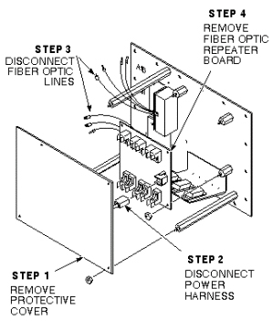

Operating Documentation
Direction 5133330-3, Rev# 14
Signa EXCITE HD 3.0T Service Methods
Module Version 2.0, Version Date 10/1/08
Operating Documentation |
| Required Persons | Preliminary Reqs | Procedure | Finalization |
|---|---|---|---|
| 1 |
Lock out and tag out circuit breaker MR1 A14 CB6 at rear of RF/Pen Cabinet on Magnet Enclosure Power Supply (MEPS) Module. (Refer to OSHA Lockout Tagout Requirements.)
Verify that voltage is between MR1 A14 TP4 (+) and TP13 (–) is 0 Vdc.
Follow steps 1 through 4 in Illustration 1.
Illustration 1: FIBER OPTIC REPEATER BOARD

Install replacement repeater board. See .
Illustration 2: FIBER OPTIC REPEATER BOARD
Connect Fiber Optic lines as labeled. See .
Connect power harness to Repeater Board. See.
Install protective cover. See.
Configure the Fiber optic repeater:
See Illustration 3 Fiber Optic Repeater Board
Illustration 3: FIBER OPTIC REPEATER BOARD

See Table 1 for jumper information.
Table 1: TEST POINT INFORMATION
| Test Point | Location Schematic | Name | Notes |
| TP1 | P.3 | F.O. TRANSMITTER INPUT: TO PAC (PAC DATA) | |
| TP2 | P.3 | F.O. RECEIVER OUTPUT: FROM TYME (PAC DATA) | |
| TP3 | P.3 | F.O. TRANSMITTER INPUT: TO SRI (SRI DATA) | |
| TP4 | P.3 | F.O. RECEIVER OUTPUT: FROM PAC (PAC DATA) | |
| TP5 | P.3 | F.O. TRANSMITTER INPUT: TO TYME (PAC DATA) | |
| TP6 | P.3 | F.O. RECEIVER OUTPUT: FROM TYME (SRI DATA) | |
| TP7 | P.3 | F.O. RECEIVER OUTPUT: FROM SRI (SRI DATA) | |
| TP8 | P.3 | F.O. TRANSMITTER INPUT: TO TYME (SRI DATA) | |
| TP9 | P.4 | GROUND | |
| TP10 | P.3 | F.O TRANSMITTER INPUT: TO SRI (RESET) | |
| TP11 | P.4 | Vin | |
| TP12 | P.4 | +5 V | |
| TP13 | P.3 | F.O RECEIVER OUTPUT: FROM TYME (SRI RESET) |
See Table 2 for test point information
Table 2: JUMPER INFORMATION
| Test Point | Location Schematic | Position | Description | Notes |
| JP1 | P4 | A | Loopback | Position "B" For Loopback Test Only |
Proceed to Finalization
Remove tag from circuit breaker MR1 A14 CB6 at rear of RF/Pen Cabinet on Magnet Enclosure Power Supply (MEPS) Module.
Restore power to the Fiber Optic Repeater by switching on circuit breaker MR1 A14 CB6.
Perform Fiber Optic Repeater Loopback Test.